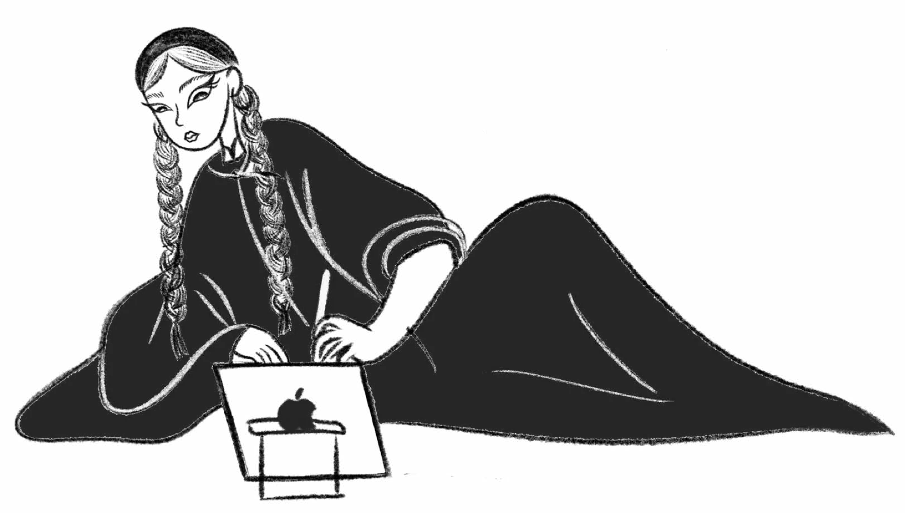

2024/2025
Graphic Design Portfolioby Portfolio de Design Graphiquepar PHAM Nhu Quynh
AboutÀ propos


I see design as my way of telling stories—stories full of energy, colors, and culture. Growing up in Vietnam, I’ve always been inspired by the richness of Eastern traditions, especially the spirit and heritage of Vietnam that shaped me, and I love blending that with a contemporary, aesthetic touch.
Pour moi, le design est une façon de raconter des histoires — des histoires pleines d’énergie, de couleurs et de culture. J’ai grandi au Vietnam, et la richesse des traditions orientales m’a toujours inspirée, en particulier l’esprit et l’héritage vietnamiens qui m’ont façonnée. J’aime les marier à une touche contemporaine et esthétique.
My design identity is rooted in contrasts: tradition and modernity, playfulness and harmony, vibrancy and depth. Color is my language, cultural richness is my material, and storytelling is the thread that ties everything together. I especially enjoy drawing from Vietnamese folk elements and cultural motifs, reimagining them in new, modern contexts.
Mon identité de designer repose sur les contrastes : tradition et modernité, espièglerie et harmonie, éclat et profondeur. La couleur est mon langage, la richesse culturelle ma matière, et la narration le fil qui relie le tout. J’aime tout particulièrement puiser dans les éléments du folklore et les motifs culturels vietnamiens pour les réinventer dans des contextes nouveaux et modernes.
I focus on creating design that communicates and builds strong brand identities, particularly for Asian-inspired concepts. By blending Eastern sensibilities with contemporary aesthetics, I develop visual identities that are both distinctive and culturally resonant. My approach to branding goes beyond aesthetics, aiming to create meaningful and cohesive brand experiences that connect emotionally with audiences.
Je conçois un design qui communique et construit des identités de marque fortes, en particulier pour des concepts d’inspiration asiatique. En mariant sensibilité orientale et esthétique contemporaine, je développe des identités visuelles à la fois singulières et porteuses de sens. Mon approche du branding va au-delà de l’esthétique : elle vise à créer des expériences de marque cohérentes et signifiantes, qui touchent le public.
ILLUsIssue 1Numéro 1 tration
GRAPICNuméro 2Design
Issue 2DesignGRAPIQUE

TYPO-Issue 3Numéro 3 graphygraphie
EARTH, WIND, WATER & FIRE: Modular typeface conception
TERRE, VENT, EAU & FEU : conception d’une typographie modulaire